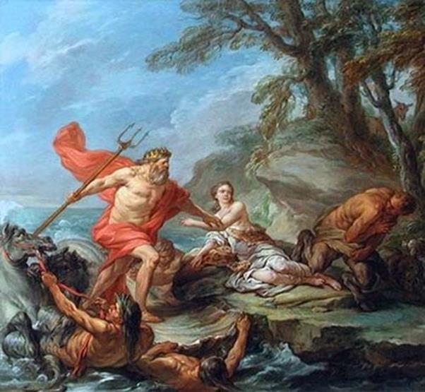

Égyptos và Danaos là hai anh em trai sinh đôi, con của Bélos và Anchinoé. Nếu lần theo gia phả thì hai anh em nhà này là cháu năm đời của tổ phụ Zeus và tổ mẫu Io, người thiếu nữ đã từng phải sống dưới lốt con bò cái trắng nhiều năm sau tới đất Ai Cập mới được Zeus trả lại hình người. Zeus và Io đã sinh ra bên bờ sông Nile người con trai danh tiếng Épaphos, vị vua đầu tiên của đất nước Ai Cập (nhưng đó là theo gia phả của người Hy Lạp còn đối với người Ai Cập thì tổ tiên họ là một con bò thần tên là Apis).
Égyptos trị vì trên đất Ai Cập, còn Danaos trị vì trên đất Libye, một xứ sở kề bên. Égyptos sinh được năm mươi người con trai còn Danaos sinh được năm mươi người con gái, và đó là những người con gái tuyệt đẹp. Nhưng rồi thế nào giữa hai anh em Égyptos xảy ra chuyện bất hòa. Danaos biết rõ Égyptos đang rắp tâm chiếm đoạt vương quốc của mình, hơn nữa lại còn muốn cưỡng bức mình phải gả năm mươi người con gái cho năm mươi người con trai của hắn. Đối với ý định cầu hôn, Danaos và những người con gái, những nàng Danaïdes149, dứt khoát khước từ. Còn với ý đồ muốn thoán đoạt, sáp nhập vương quốc Libye vào dưới quyền cai quản của Égyptos thì Danaos thật khó mà đối phó. Những người con trai của Égyptos bị khước từ cuộc hôn nhân đã chiêu tập binh mã kéo đại quân sang vương quốc Libye của Danaos để trừng phạt, Danaos và những người con gái chỉ còn cách chạy trốn. Được nữ thần Athéna giúp đỡ, ban cho một lời chỉ dẫn, Danaos cho đóng một con thuyền có năm mươi mái chèo để vượt biển.
Con thuyền của Danaos ra đi. Chẳng rõ trải qua bao ngày lênh đênh trên biển khơi không biết đâu là bờ và bến, con thuyền dừng lại ở hòn đảo Rhodes. Danaos và các con gái lên đảo xây dựng một đền thờ nữ thần Athéna, vị thần đã bảo vệ che chở cho cuộc sống của họ. Họ cũng không quên dâng cúng nữ thần những lễ hiến tế trọng thể. Song họ cũng không có ý định sinh cơ lập nghiệp ở hòn đảo này. Họ vẫn lo lắng có một ngày nào gần đây thôi, những người con trai của Égyptos sẽ đuổi kịp và sẽ gây cho họ những tai họa khôn lường. Vì thế họ lại quyết định rời hòn đảo sau khi đã dừng chân lại ít ngày để đi tìm một nơi trú ngụ an toàn hơn, yên tâm hơn. Nơi đó, theo họ là đất Argolide ở Hy Lạp vốn là quê hương của Io.
Danaos và những nàng Danaïdes lại ra đi. Thần Zeus theo dõi cuộc hành trình của họ và bảo vệ con thuyền có năm mươi mái chèo của họ tránh khỏi những cơn phong ba bão táp. Trải qua bao ngày lênh đênh trên biển khơi bao ba vô tận, cuối cùng con thuyền của họ đã đến được bờ biển của đất Argolide trù phú. Danaos và những người con gái xinh đẹp hy vọng sẽ được mảnh đất thiêng liêng này đón nhận với tâm lòng quý người trọng khách, khi nương nhờ, trú ngụ và bảo vệ cha con mình thoát khỏi cuộc hôn nhân cưỡng bức của những người con trai Égyptos.
Những nàng Danaïdes đặt chân lên mảnh đất Argolide. Để cho mọi người hiểu rằng mình là những người đi cầu xin sự che chở, các nàng cầm trên tay một cành olive và những lễ vật. Nhưng đi một hồi lâu trên bờ biển, các nàng chẳng gặp một ai. Chờ mãi cũng chẳng gặp một ai. Bỗng đâu các nàng Danaïdes nhìn thấy từ phía xa một đám mây bụi khổng lồ đang chuyển động giống như một cơn gió lốc mà ta thường thấy cuốn xoáy một đám bụi chạy trên mặt đường. Đám bụi đó ngày càng chuyển đến gần các nàng Danaïdes. Và các nàng đã nhìn ra sự thật. Đó là một đạo quân đông đảo gồm cả kỵ binh và bộ binh đang tiến bước, khiên giáp sáng ngời. Tiếng vó ngựa và chiến xa, tiếng chân các chiến binh nện xuống mặt đường ầm ầm rền vang như sấm. Đây là đạo hùng binh của nhà vua Pélasge, con của Palaichton, người cai quản mảnh đất Argolide trù phú, nơi mọc lên đô thành Argos hùng cường. Đươc tin cấp báo có một con thuyền lạ xâm nhập lãnh thổ, nhà vua liền thống lĩnh ba quân kéo ngay ra bờ biển để phòng ngừa mọi sự bất trắc. Nhưng đến nơi chỉ thấy có một vị vua già và một bầy con gái, năm mươi thiếu nữ xinh đẹp. Thật chẳng có gì đáng để xứ sở này phải lo ngại. Hơn nữa những thiếu nữ đó lại cầm cành olive, dấu hiệu của sự hòa hiếu, chân thành và sự cầu xin che chở150.
Các nàng Danaïdes đồng thanh cất lời cầu xin nhà vua che chở cho cha con mình thoát khỏi cuộc hôn nhân cưỡng bức của những người con trai của Égyptos mà sớm muộn họ sẽ truy đuổi mình tới đây. Những lời cầu xin thống thiết và nước mắt của những nàng Danaïdes làm nhà vua Pélasge vô cùng xúc động. Các nàng viện dẫn đến thần Zeus người bảo vệ và che chở có uy quyền hùng mạnh nhất của những kẻ yếu kém, để cầu xin nhà vua đừng giao nộp các nàng cho những người con trai của Égyptos, đừng xua đuổi cha con Danaos. Các nàng viện dẫn đến truyền thống thiêng liêng của tổ tiên: mảnh đất Argos này vốn là quê hương của nàng Io xưa kia, người khai sinh ra dòng dõi Danaos ngày nay.
Vua Pélasge rất đỗi băn khoăn. Khước từ những lời cầu xin của những Danaïdes thật chẳng đành lòng. Nhưng chấp nhận lời cầu xin của họ thì có thể đưa đất nước này vào một thảm họa. Những người con trai của Égyptos với binh hùng, tướng mạnh sẽ tới đây dùng vũ lực để giành lấy bằng được những nàng Danaïdes xinh đẹp. Trao những nàng Danaïdes cho họ ư? Một sự vi phạm trắng trợn không thể nào dung thứ được đối với đạo luật thiêng liêng của thần Zeus và các vị thần cao quý và thế giới Olympe. Thần Zeus có thể vì trọng tội này mà nổi giận giáng tai họa trừng phạt xuống đầu con dân Argos. Pélasge thật khó nghĩ và không biết trả lời các nàng Danaïdes sao đây. Cuối cùng nhà vua khuyên Danaïdes và các con gái hãy vào thành Argos thiết lập một bàn thờ thần linh và bày trên bàn thờ lọ hoa cắm những cành olive cùng với lễ vật biểu hiện nguyện vọng xin được che chở. Còn vua Pélasge sẽ đích thân triệu tập thần dân đến hội nghị. Ông sẽ trình bày tình cảnh khó xử của ông và xin để thần dân quyết định. Ông sẽ tuân theo quyết định của thần dân để xử lý công việc này. Ông mời các nàng Danaïdes đến hội nghị và khuyên các nàng cố sức thuyết phục những con dân của đất Argos chấp nhận lời cầu xin của các nàng. Hội nghị sau khi nghe nhiều vị bộ lão cũng như nhiều dũng sĩ danh tiếng phân giải điều hơn lẽ thiệt, đã quyết định chấp nhận lời cầu xin của Danaos và những nàng Danaïdes. Đúng lúc đó, khi hội nghị vừa quyết định xong thì một sứ giả Égyptos tới. Hắn đòi nhà vua Pélasge phải trao những nàng Danaïdes cho hắn. Hắn đe dọa chiến tranh. Hắn ăn nói kiêu căng, ngạo mạn, láo xược, hơn nữa hắn còn ra lệnh cho lũ gia nô xông vào toan bắt đi một nàng Danaïdes. Vua Pélasge nổi giận ra lệnh trục xuất ngay tên sứ thần lão xược đó. Tất nhiên trước khi quay gót ra đi, tên sứ thần vô đạo không quên phun ra những lời đe dọa chiến tranh.
Thế rồi chiến tranh đã xảy ra. Vua Pélasge thống lĩnh quân binh sau nhiều trận giao tranh với quân địch, bị núng thế phải bỏ thành Argos chạy lên phía Bắc với hy vọng dùng mảnh đất rộng lớn này để nghỉ chân chờ thời phản công lại quân địch. Nhân dân Argos bầu Danaos làm vua thay Pélasge. Để tránh cho thần dân Argos phải dấn sâu vào một cuộc chiến tranh đẫm máu kéo dài, nhà vua chấp thuận gả năm mươi nàng Danaïdes cho năm mươi người con trai của Égyptos.
Đám cưới được cử hành vô cùng lộng lẫy và sang trọng. Có lẽ trong sử sách chưa từng có một đám cưới nào to và linh đình như đám cưới này. Tiệc tan, từng đôi vợ chồng trở về phòng. Thành Argos sau những giờ phút náo động tưng bừng trong hoan lạc trở lại yên tĩnh. Nhưng rồi nếu những ai để ý lắng nghe thì thấy ở trong phòng của từng đôi vợ chồng mới cưới nổi lên những tiếng rên rỉ đau đớn quằn quại. Các nàng Danaïdes đã giết chồng? Đúng, họ đã tuân theo lời vua cha giết chồng ngay đêm tân hôn. Vua Danaos khi tiệc tan đã lén giao cho mỗi người con gái một con dao nhọn, dặn các con phải kết thúc số phận những tên chồng đã từng làm cha con nhà vua phải long đong phiêu bạt. Nhưng chỉ có bốn mươi chín nàng Danaïdes giết chồng. Còn một nàng tên là Hypermnestre không giết chồng, không giết chàng Lyncée của nàng. Có thể vì nàng cảm thấy việc làm đó là quá ư tàn nhẫn và khủng khiếp, nàng không đủ can đảm để làm một việc như thế, mặc dù biết rằng trái lệnh vua cha là một trọng tội. Nhưng đúng hơn vì nàng đã yêu mến người chồng mới cưới của nàng, yêu mến thật sự. Và khi người ta đã yêu thật sự thì từ thần Zeus trở đi cũng phải khuất phục trước uy lực của nữ thần Aphrodite.
Được biết Hypermnestre không tuân theo lệnh của mình, Danaos vô cùng tức giận. Nhà vua tống giam đôi vợ chồng này vào ngục tối và quyết định sẽ đưa ra xét xử trước tòa án của nhân dân Argos. Trước phiên tòa, nhà vua đòi phải xử tử hình để làm gương cho những người khác. Nhưng ngay khi ấy, vừa lúc Danaos nói dứt lời thì nữ thần Aphrodite xuất hiện. Nữ thần, trước tòa án lên tiếng bênh vực cho Hypermnestre. Bằng những lý lẽ của vị thần thấu hiểu trái tim yêu đương của con người, Aphrodite đã cãi cho người con gái bất tuân lệnh cha được trắng án. Và người con gái đó trở thành người vợ chính thức hợp pháp của chàng Lyncée xinh đẹp. Các vị thần trên thiên đình cũng tán thành cuộc hôn nhân này và ban cho đôi vợ chồng Lyncée-Hypermnestre những ân huệ lớn lao: con cháu, dòng dõi của họ sau này sẽ là những anh hùng vĩ đại, lập nên những chiến công hiển hách. Chính người anh hùng Héraclès với những chiến công bất tử, có một không hai của đất nước Hy Lạp thần thánh là con dòng cháu giống của Lyncée.
Đối với tội ác giết chồng của những nàng Danaïdes nhẽ ra phải bị trừng phạt nặng nề nhưng thần Zeus không muốn bắt những người con gái xinh đẹp này phải chết. Thần ra lệnh cho nữ thần Athéna và thần Hermès tẩy trừ tội ác ô uế của họ. Nhưng đó mới chỉ là một việc. Còn một việc quan trọng hơn mà nhà vua Danaos rất đỗi lo lắng. Đó là việc phải lo gả chồng cho bốn mươi chín người con gái đã can tội giết chồng. Quả thật đây là một chuyện không đơn giản, không dễ dàng. Thử hỏi có ai lại dám táo gan ngỏ lời xin kết duyên với một người con gái đã từng giết chồng? Nhưng rồi Danaos cũng nghĩ ra một kế. Ông cho tổ chức một ngày hội lớn để tưởng nhớ công ơn của các vị thần Olympe đối với nhân dân Argos. Và ở Hy Lạp xưa kia đã mở hội là tất nhiên phải có những cuộc thi đấu võ nghệ, thể dục thể thao. Mà đã thi đấu là phải có giải thưởng. Nhưng giải thưởng ở hội của Danaos mở không giống với những giải thưởng ở những hội khác. Hội Panathénées là một bình dầu olive, Hội Dionysos là một con dê, một bình Rượu nho. Còn hội do Danaos mở là một người con gái xinh đẹp. Tin Danaos mở hội với những cuộc thi đấu truyền đi khắp nơi. Mọi người, nhất là những chàng trai, hào hứng đi dự hội, để đọ sức đua tài. Bằng cách ấy Danaos gả chồng cho bốn mươi chín cô con gái êm thấm, xong xuôi.
Tuy nhiên các vị thần Olympe vẫn không thể nào quên được tội ác của những nàng Danaïdes. Sau này khi chết đi, xuống dưới vương quốc của thần Hadès, các nàng phải chịu một hình phạt xứng đáng với tội lỗi của mình. Các nàng phải đội một chiếc vò đi kín đầy nước để đổ vào một chiếc thùng lớn, đổ cho đầy. Nhưng ác nghiệt thay, chiếc thùng lớn đó lại thủng đến hàng trăm lỗ ở dưới đáy! Các vị thần đã nghĩ ra cách để trừng phạt những nàng Danaïdes. Vì thế những nàng Danaïdes đổ chẳng bao giờ đầy được cái thùng. Nhưng các nàng cứ phải làm mãi, làm mãi với hy vọng sẽ đổ đầy nước vào cái thùng. Đương nhiên chẳng bao giờ những nàng Danaïdes hoàn thành công việc đó cả. Ngày nay trong văn học thế giới, thành ngữ Chiếc thùng của những nàng Danaïdes (Le tonneau des Danaïdes hoặc Remplir le tonneau des Danaïdes) chỉ một công việc làm không biết bao giờ kết thúc, vô ích, vô nghĩa, mơ hồ, mục đích chẳng rõ mà lợi ích cũng không. Đổ đầy nước vào chiếc thùng của những nàng Danaïdes là một công việc làm dã tràng xe cát, ném đá mất tăm. Mở rộng nghĩa nó còn chỉ sự vô hạn độ, tương đương như câu Lòng tham không đáy của chúng ta.
Cũng chuyện này nhưng có những người kể hơi khác đi một chút. Nhà vua trị vì ở đô thành Argos không phải là Pélasge mà là Gélanore. Danaos cùng với năm mươi người con gái đến xin Gélanore cho nương nhờ nhưng Gélanore không ưng thuận. Gélanore cho tổ chức một cuộc tranh luận trước đông đảo nhân dân Argos để nhân dân lắng nghe ý kiến của mỗi bên, lý lẽ của mỗi bên và cuối cùng biểu quyết. Cuộc tranh luận diễn ra suốt một ngày trời mà không phân thắng bại, phải hoãn đến ngày hôm sau. Và hôm sau khi bình minh vừa ửng đỏ chân trời giữa lúc Gélanore và Danaos sắp bước vào cuộc tranh luận thì bỗng nhiên có một con chó sói từ khu rừng bên lao ra nhảy xổ vào đàn súc vật đang đi ngang qua đó. Con sói khỏe mạnh hung dữ nhanh nhẹn như một mũi lao phóng lên lưng con bò mộng và cắn chết tươi con bò. Vô cùng kinh hãi trước chuyện đột ngột này những người Argos cho đó là một điềm báo của các vị thần. Có lẽ Danaos đã được các vị thần trao cho sứ mạng trị vì đất Argos. Con sói kia cũng như Danaos, cũng từ đâu đến. Những người Argos nghĩ thế và họ quyết định phế truất Gélanore và trao ngôi báu cho Danaos, Danaos lên ngôi. Việc đầu tiên là nhà vua cho dựng một ngôi đền để tạ ơn thần Apollon, đền thờ Apollon Lycien tiếng Hy Lạp nghĩa là Apollon Chó sói, bởi vì con sói gắn với nguồn gốc tôtem từ xưa của Apollon cũng như gắn với chiến công diệt chó sói, bảo vệ đàn súc vật của Apollon.
Danaos lên ngôi giữa lúc các sông ngòi trên đất Argolide cạn khô không còn một giọt nước. Nghe đâu tai họa này là do thần Sông-Inachos và thần Poséidon có chuyện bất hòa. Tình cảnh lúc này thật vô cùng khổ sở. Đất khô cằn, cỏ cây héo hon, ủ rũ. Người ta đi múc, đi chắt từng bát nước, từng hạt nước trên những vũng bùn. Không thể kéo dài tình cảnh khổ cực này được. Danaos bèn sai các con gái đi khắp nơi tìm nước về cho nhân dân. Bữa kia, một người con gái của Danaos, nàng Amymoné đi tìm nước đến giữa chừng mệt quá, nằm ngủ thiếp đi bên vệ đường. Khi nàng đang ngủ ngon lành thì bỗng nhiên cảm thấy như có ai bế bổng mình lên. Nàng giật mình tỉnh dậy. Trời ơi! Thật khủng khiếp! Một con quỷ nửa người nửa dê, lông lá xù xì đang ôm chặt lấy thân nàng. Amymone đem hết sức ra vùng vẫy, giẫy giụa nhưng không sao thoát khỏi đôi cánh tay rắn chắc của quỷ thần Satyre đang ghì chặt lấy người nàng. Chết mất, có lẽ nàng đành phải bó tay phó mặc tấm thân trong trắng của mình cho tên Satyre gớm ghiếc này. Trong phút hiểm nghèo ấy, Amymone chợt nhớ tới thần Poséidon. Nàng cầu khấn thần hãy mau mau đến giải thoát cho mình. Vụt một cái, thần Poséidon hiện ra. Thần vung cây đinh ba giáng một đòn cực mạnh nhằm thẳng vào đầu tên Satyre. Nhanh như cắt, Satyre ngồi thụp xuống tránh đòn đồng thời cũng buông ngay Amymone ra để chạy thoát lấy thân. Thế là Amymone thoát khỏi bàn tay cường bạo của quỷ thần Satyre. Để trả ơn vị thần ân nhân của mình, nàng đã chia chăn sẻ gối với Poséidon. Đôi vợ chồng này sinh ra được một trai tên gọi là Nauplios, sau này nổi danh là một thủy thủ lành nghề, am hiểu mặt biển như lòng bàn tay.
Amymone thoát khỏi tay quỷ thần Satyre. Thật là vô cùng may mắn. Nhưng còn may mắn hơn nữa, gấp bội phần hơn nữa là đã có nước. Đòn đinh ba của thần Poséidon phóng trượt quỷ thần Satyre, lao vào vách đá, và từ vách đá vọt ra ba dòng nước, ba dòng nước ngọt mát lạnh. Từ đây nước lại cuồn cuộn chảy về tưới mát cho khắp cánh đồng xứ Argos. Chỗ này có người kể khác đi một chút, theo họ, vì Poséidon thương yêu Amymone nên đã chỉ cho nàng biết một nguồn nước ở Lerne.

Poséidon cứu Amymone
Huyền thoại Những nàng Danaïdes phản ánh cuộc đấu tranh giữa hai hình thái hôn nhân tập đoàn và hôn nhân một vợ một chồng. Cuộc đấu tranh đó kết thúc bằng thắng lợi của hình thái hôn nhân một vợ một chồng phản ánh sự thắng lợi của chế độ phụ quyền đối với chế độ mẫu quyền. Égyptos và Danaos cùng chung một cội nguồn, một thị tộc mẫu hệ, nếu có thể nói như thế được, mà tổ mẫu là Io. Nhưng giờ đây uy lực của chế độ mẫu quyền không còn ở thời kỳ “vàng son” của nó nữa. Chính vì thế mà Danaos và các Danaïdes chống lại. Thế nhưng, một câu hỏi đương nhiên đặt ra, nàng Hypermnestre chống lại lệnh của vua cha, không giết chồng thì sao lại có thể gọi là sự thắng lợi của quan hệ hôn nhân một vợ, một chồng? Đúng là Hypermnestre chống lại lệnh của vua cha, nhưng nàng chống lại lệnh của vua cha không phải là để trở về hình thái hôn nhân cũ. Cuộc hôn nhân của nàng, gia đình nàng là biểu hiện của một quan hệ mới: hôn nhân một chồng, gia đình một vợ, một chồng của chế độ phụ quyền.
Lại một câu hỏi nữa đặt ra: Việc những nàng Danaïdes bị trừng phạt dưới vương quốc của thần Hadès có ý nghĩa gì? Rõ ràng sự trừng phạt này khiến cho ta nghi ngờ nhận xét trên. Những kết quả nghiên cứu của khoa thần thoại học chỉ cho chúng ta rõ, sự kiện đó chỉ là một lớp huyền thoại ra đời muộn hơn, khá lâu sau này, lắp ghép vào (do tính phức hợp của huyền thoại) phản ánh quan điểm của tôn giáo Orphisme. Đây không phải là sự phủ nhận bước chuyển biến tiến bộ của một quan hệ hôn nhân mới, gia đình mới, nhằm bảo vệ chế độ mẫu quyền, mà là sự phủ nhận một hành động tàn ác. Học thuyết tôn giáo Orphisme truyền giảng sự sám hối của linh hồn con người được sạch mọi tội lỗi, vươn tới chỗ cao cả vĩnh hằng. Những tín đồ của tôn giáo này kiêng giết súc vật và ăn thịt vì thế hẳn rằng họ không thể nào chấp nhận việc giải quyết những vấn đề xã hội bằng con đường “chém giết”, “bạo lực” như hành động của những nàng Danaïdes. (Tôn giáo nào mà chẳng phủ nhận bạo lực!) Vấn đề chế độ mẫu quyền không hoàn toàn đặt ra với một học thuyết tôn giáo ra đời vào quãng thế kỷ VIII TCN, thời kỳ mà đất nước Hy Lạp đã hình thành những nhà nước chiếm hữu nô lệ với cơ chế polis151.
[148] Héliades là con của Hélios, gồm ba nàng Lampétie, Phaéthuse và Phoebé.
[149] Danaïdes là con của Danaus.
[150] Vì lẽ đó nên người xưa gọi là cành olive là “cành lá của sự cầu xin”.
[151] A.F. Losev, Antichnaja mifologija vee istoricheskom razviti. Uchpedgiz, Moskva 1957, tr. 76-77.